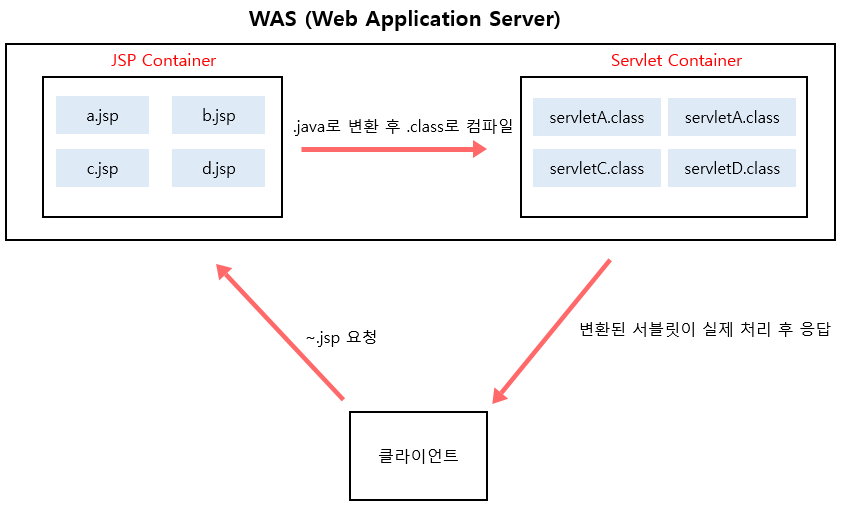

Servlet
등장배경
Java 를 사용하여 웹 페이지를 동적으로 생성하는 서버의 프로그램 (혹은 그 사양) 이며 서블릿 이라고 불린다.
자바 서블릿은 Java EE 사양의 일부분으로 주로 이 기능들을 이용하여 웹 시스템이 구현되고 있다.
과거에는 C C++ 을 이용해서 미들웨어 제품을 만들어서 판매를 하였는데 하드웨어 혹은 운영체제 종속성 때문에 어려움이 많았다.
Java 플랫폼의 여러 장점들 (이식성, 독립성 등등) 을 활용하여 공통 API 로 제공하면 기존의 어려움을 충분히 개선해 나갈수 있었기 때문에 지금의 WAS (Web Application Server) 라고 불리우는 Java EE 어플리케이션 서버의 시작이 되었다.
그렇게 Java EE 는 많은 관심을 받아, 기업들은 WebLogic 이나 WebSphere, Apache Tomcat 등과 같은 WAS 제품을 앞다투어 출시하게 되었고 이후 등장하는 JSP 도 많은 사랑을 받는다.
역활
일반적인 웹 어플리케이션 환경의 프로그래밍에서 네트워크 통신을 미들웨어 중에서 대표적으로 Web Server 와 WAS (Web Application Server) 사용하여 구성을 한다.
Web 서버는 보통 하드웨어 (물리적 서버) 와 소프트웨어로 구분되며 보통 이 둘을 통칭하여 Web 서버 라고 지칭한다.
WAS 서버는 대부분은 애플리케이션을 수행해주는 미들웨어 (소프트웨어 엔진) 으로써 동적인 컨텐츠 수행 하는 역활을 담당한다.
JSP (Java Server Page)
기존의 HTML에서 JAVA 코드의 사용이 가능한 JSP 와 같은 기술이 등장 하였고 이는 JAVA 기술을 대중화 시키는데도 한몫 하였다.
javax.servlet.http.HttpServlet 클래스를 상속받은 Java 소스코드로 변환한 다음 컴파일 되어 실행하다.
하나의 JSP 페이지가 Java 클래스이기 때문에 모든 Java Library 의 사용이 가능하다.

Servlet 의 장단점
장점
- Thread 기반으로 하기 때문에 웹 어플리케이션 운영에 효율적이다.
- 병렬처리
- Java 를 기반으로 대부분의 이점을 가져온다.
- Java 기분의 풍부한 API 사용이 가능하다.
- 이기종 OS 장비의 이식성이 우수하다.
- 컨텐츠와 비지니스 로직의 분리가 가능하다.
단점
- ????
Servlet Container
Reference http://blog.naver.com/PostView.nhn?blogId=00050004&logNo=70043657451 https://dololak.tistory.com/82 http://mangkyu.tistory.com/14